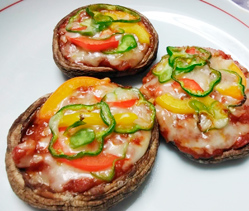

焼き椎茸のピザ風
- 調理時間： 30分
- （一人当たり）
- カロリー：280kcal
- たんぱく質：16.0g
- 脂質：18.0g
- 炭水化物：13.7g
- 塩分：2.4g


＜2人分＞
- 椎茸
- 4枚(大)
- カラーピーマン
- 30g
- ピザ用チーズ
- 適量
- ・合いびき肉
- 20g
- ・トマト（角切り）
- 1個
- ・ニンニク（みじん切り）
- 1片
- ・玉ねぎ（みじん切り）
- 1/6個
- ・ケチャップ
- 大さじ2
- ・ソース
- 大さじ1
- ・植物油
- 少々


- カラーピーマンは細切りにする。
椎茸は軸をとる。 - ☆トマトソースをつくる。
①小鍋に油をしき、ニンニクを炒める。
②合いびき肉、玉ねぎを加えて炒め、火が通ればトマトを加える。
③少し煮詰め、ケチャップとソースをくわえてとろみがつけば完成。 - 椎茸にトマトソースを詰め、カラーピーマンとチーズをのせてオーブンで焼く。
焼き椎茸のピザ風
菌床栽培の普及により、一年を通して安定的に出回る椎茸ですが、本来の旬は、春と秋。冬を越し、春に生えてくるものを「春子」、秋に出回るものを「秋子」と呼びます。春子は身がしまってうま味が強く、秋子は香り高いのが特徴です。
椎茸は、不足しがちなビタミンＤを多く含みます。骨や歯をつくることはよく知られていますが、筋肉を維持するためにも必要不可欠な栄養素です。香りや食感が苦手な方もいますが、調理方法で克服できるとよいですね。